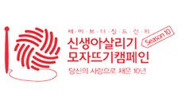
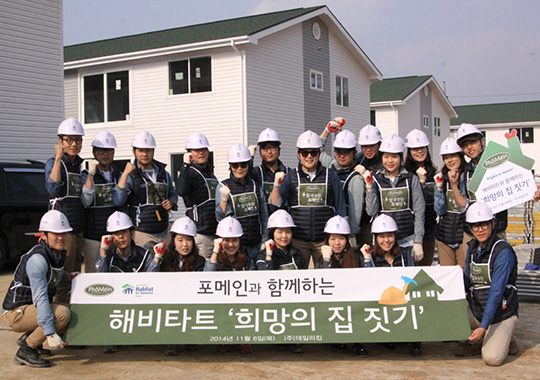
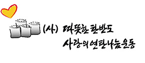

포메인이 만드는 세상
PHOMEIN CSR
식지 않는 뜨거운 진심으로 따뜻한 오늘, 따뜻한 세상을 만듭니다.
포메인은 신뢰 받는 모범 기업이라는 일념 아래
윤리 경영을 바탕으로 소외 계층과 개발 도상국 어린이 구호에 힘을 보태고 있습니다.
활동 소개

 포메인 햅쌀 쌀국수면 4,536박스 기부
포메인 본사에서는 햅쌀만을 사용해 자체 개발에 성공한 햅쌀
포메인 햅쌀 쌀국수면 4,536박스 기부
포메인 본사에서는 햅쌀만을 사용해 자체 개발에 성공한 햅쌀
쌀국수면을 매장에 선보이기에 앞서, 복지 소외계층을 위해
1억 8천만원 상당의 쌀국수 4,536박스를 기부하였습니다.

 ‘PHO EVER 2018’ 직업체험 멘토링
포메인은 (사)글로벌비전과 함께 취업 지원이 필요한
‘PHO EVER 2018’ 직업체험 멘토링
포메인은 (사)글로벌비전과 함께 취업 지원이 필요한
청소년을 대상으로 포메인에서 경험할 수 있는 직업에 대해
학습 및 실습하는 직업체험 멘토링 ‘PHO EVER 2018’을
진행하였습니다.

 ‘포항 지진 피해주민 돕기’ 기부
포메인 공식 페이스북에서 포항 지진 피해주민 돕기 기부
‘포항 지진 피해주민 돕기’ 기부
포메인 공식 페이스북에서 포항 지진 피해주민 돕기 기부
캠페인 ‘PHO U x 4’를 진행하여 모금된 기금의 4배를
‘희망브리지 전국재해 구호협회’에 기부하였습니다.


‘신생아 살리기 모자뜨기 캠페인’ 참여
포메인 본사 임직원 및 전 가맹점주들은 저체중이나 영양이 부족한
신생아들이 체온을 유지하고, 따듯한 생명의 힘을 키울 수 있도록
200여 개의 모자를 제작하여 세이브더칠드런에 기부하였습니다.
 성남 지역아동센터 ‘행복선물상자’ 전달
성남 지역아동센터 3곳에 포메인 본사 임직원들이 포장한
성남 지역아동센터 ‘행복선물상자’ 전달
성남 지역아동센터 3곳에 포메인 본사 임직원들이 포장한
행복선물상자 100박스를 전달하고, 아이들과 함께 월남쌈을
만들며 따뜻한 저녁 식사를 나누었습니다.

 해비타트 ‘희망의 집 짓기’ 기금 후원
지역 사회에 기여하고, 무주택 저소득층 가정에 도움을 드리고자
해비타트 ‘희망의 집 짓기’ 기금 후원
지역 사회에 기여하고, 무주택 저소득층 가정에 도움을 드리고자
포메인 임원들과 함께 한 마음 한 뜻으로 해비타트에
기금을 전달하였습니다.

 해비타트 ‘희망의 집 짓기’ 건축 봉사
무주택 저소득층 가정의 자립을 돕고 따뜻한 보금자리를
해비타트 ‘희망의 집 짓기’ 건축 봉사
무주택 저소득층 가정의 자립을 돕고 따뜻한 보금자리를
선물하고자 포메인 임직원들과 함께 직접 땀 흘려
‘희망의 집 짓기’ 건축 봉사 활동을 진행하였습니다.


‘사랑의 연탄 나눔’ 봉사
포메인 본사 임직원 모두가 ‘사랑의 연탄 나눔’ 봉사에
참여하여 ‘(사) 따뜻한 한반도 사랑의 연탄 나눔 운동’ 에 연탄
5,000장을 기증하고, 경기 성남 금토동의 소외계층 가구에
연탄 1,500장을 직접 전달하였습니다.

 세계 어린이 구호 기금 전달
업계 최초로 유니세프와 기부 협약을 맺고 도움의 손길이
세계 어린이 구호 기금 전달
업계 최초로 유니세프와 기부 협약을 맺고 도움의 손길이
필요한 세계 빈곤 아동들에게 작은 희망이 되기를 바라며,
세계 어린이 구호 기금을 전달하는 의미 있는 행사를 가졌습니다.